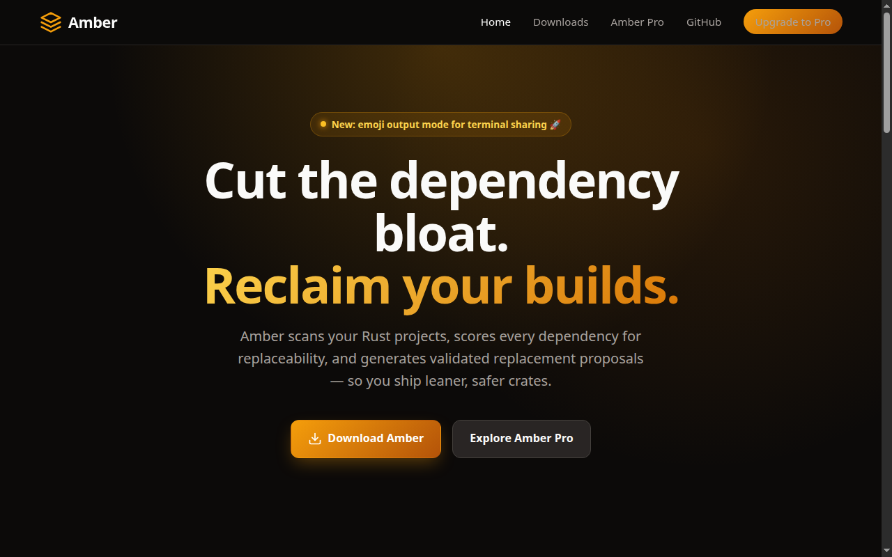
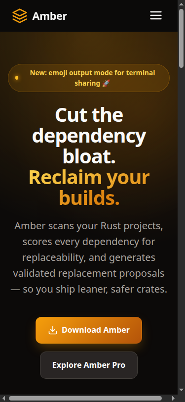

1. Scan
Index every crate in your workspace and trace how each dependency is actually used in your source.
Amber scans your Rust projects, scores every dependency for replaceability, and generates validated replacement proposals — so you ship leaner, safer crates.
Amber automates the tedious work of dependency analysis and gives you actionable, tested replacement plans.
Index every crate in your workspace and trace how each dependency is actually used in your source.
Get a replaceability score based on usage complexity, transitive weight, security risk, and maintenance burden.
Generate drop-in replacement stubs and migration guides for the crates you can safely remove.
Every generated replacement is checked with cargo check before you ever commit it.
Supercharge Amber with Groq LPU-powered fast inference for instant scoring, natural-language migration plans, and team-wide policy enforcement.
Sub-second AI reasoning on every proposal, powered by Groq’s low-latency Language Processing Units.
Define required and forbidden crates across every repository in your organization.
Run Amber in GitHub Actions, GitLab CI, or any pipeline with SARIF and JSON reports.
Prefer the command line? Grab Amber with cargo or download a pre-built installer.
Amber’s new emoji output mode makes reports pop in the terminal — perfect for demos, READMEs, and social sharing.
Run amber --format emoji analyze for a rich, emoji-filled dependency report.
Run amber --format emoji score <crate> to share a score card in seconds.
Amber’s home on the web looks great on desktop and mobile — dark mode by default, fast, and fully responsive.

Desktop hero section with the new emoji-mode announcement badge.

Mobile view with the hamburger menu and responsive typography.